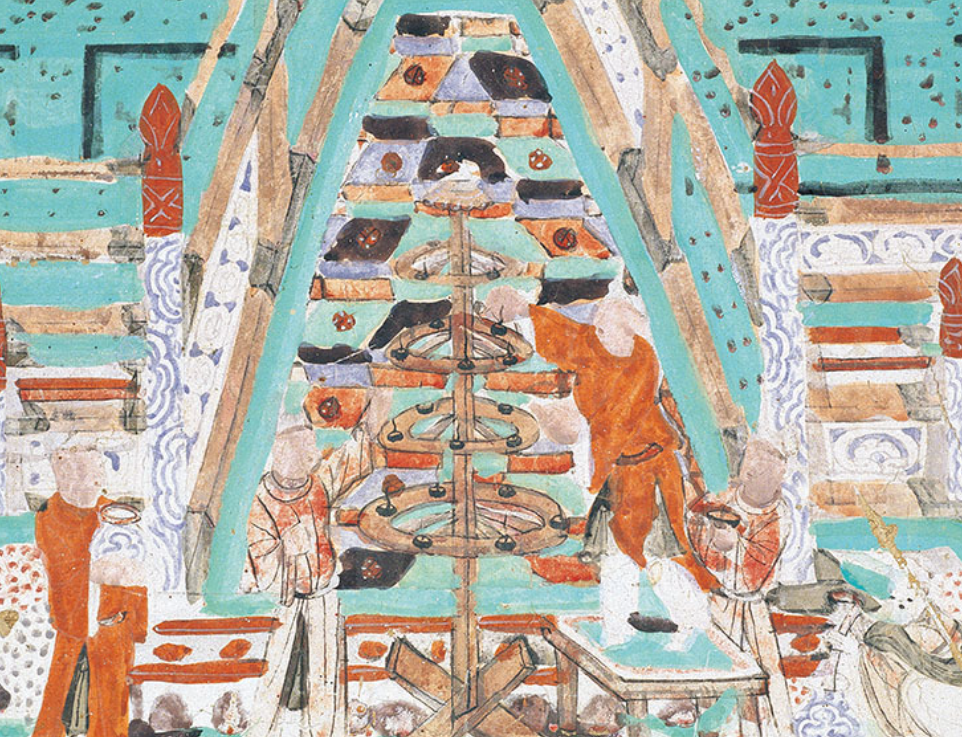
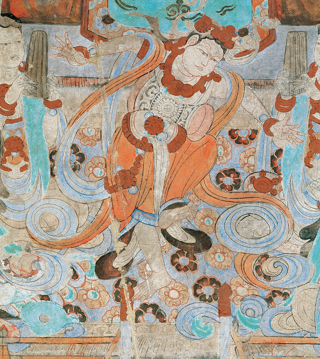
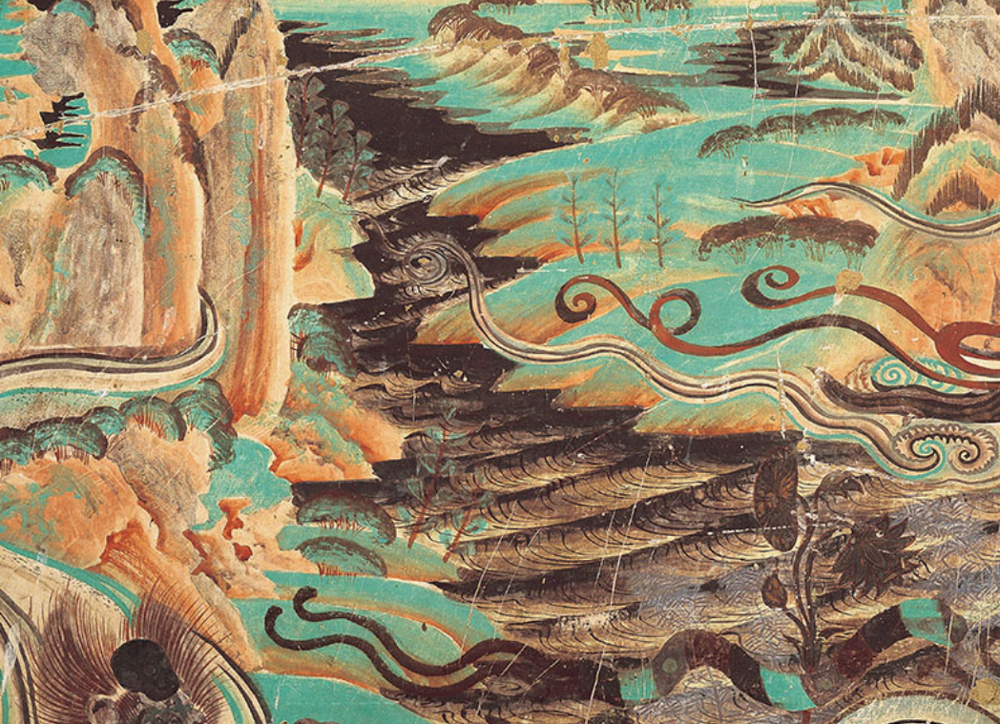
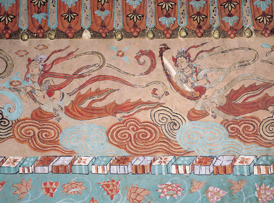
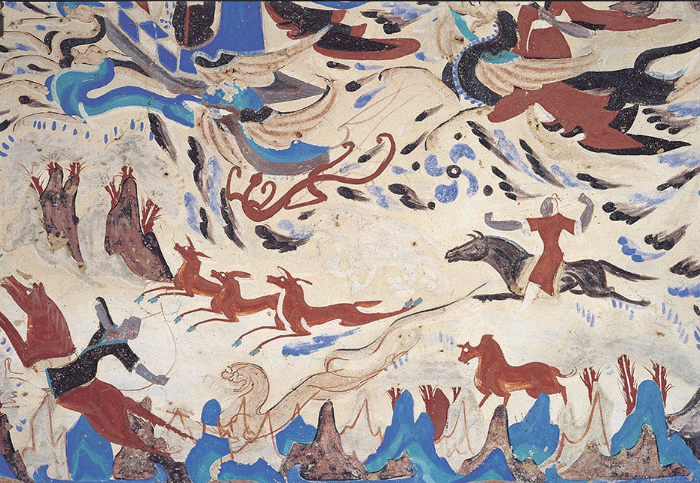
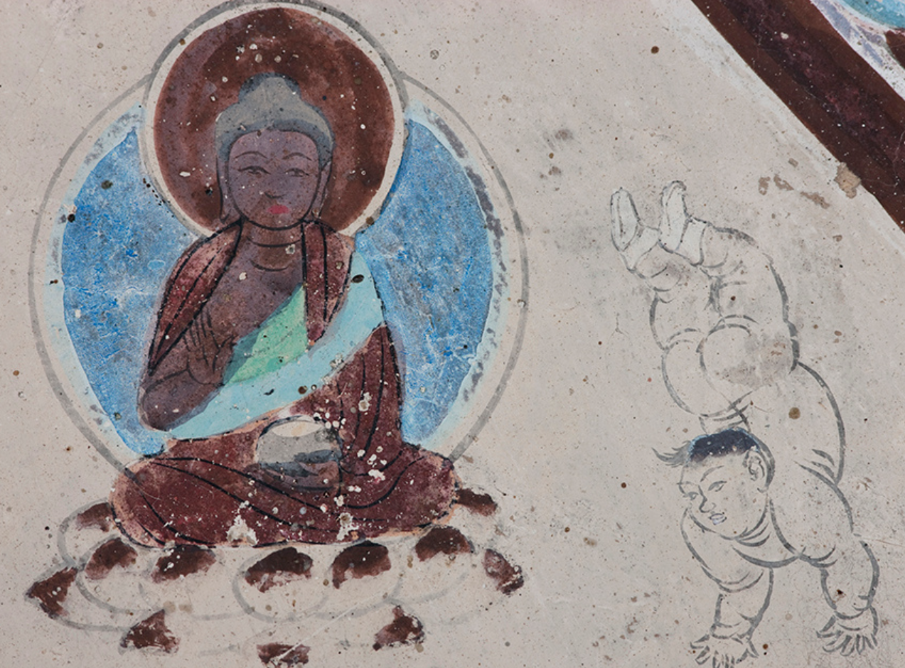

探索壁画
让我们通过壁画感受这里面的历史意义!

虹桥前有一五层灯轮，两名点灯人正在添油点灯，右边的人站在四腿凳上，点灯人身后各有一人双手端着油碗。

舞伎披巾、展臂、张手指，曲膝高提等姿，舞伎气质刚健；鼓形稍大，纹饰清晰。

在陡峭的山岭上有河流流过，临水处建有寺庙，山岭下的大河两侧生长着杉树。

垂幔下，一身飞天献花供养，另一身演奏凤首琴，琴张四弦，飞天右手握琴颈，左手拇指和食指抚弦。

四周山峦重重，树木茂盛，水波荡漾。山中还画出飞禽走兽，生动活泼。

猎人正在捕鹿、射虎，场面十分惊险，山峦小于人物，以不同的颜色染出，具有凹凸的效果，上部画出远山，表现出空间感。

倒立是现代体操运动中是常见的基础动作，不过这个唐代的小胖墩，选择了极富挑战的倒立来完成礼佛，他能成功吗？